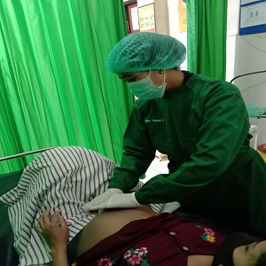
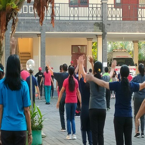
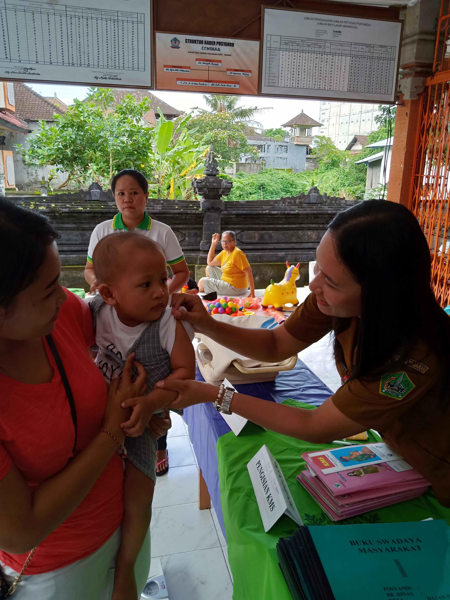
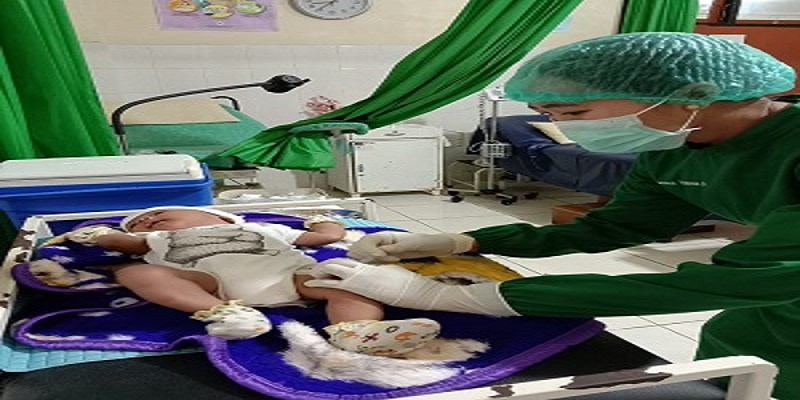
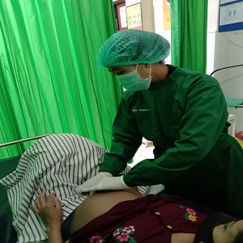
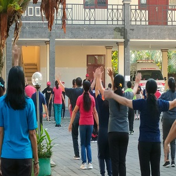
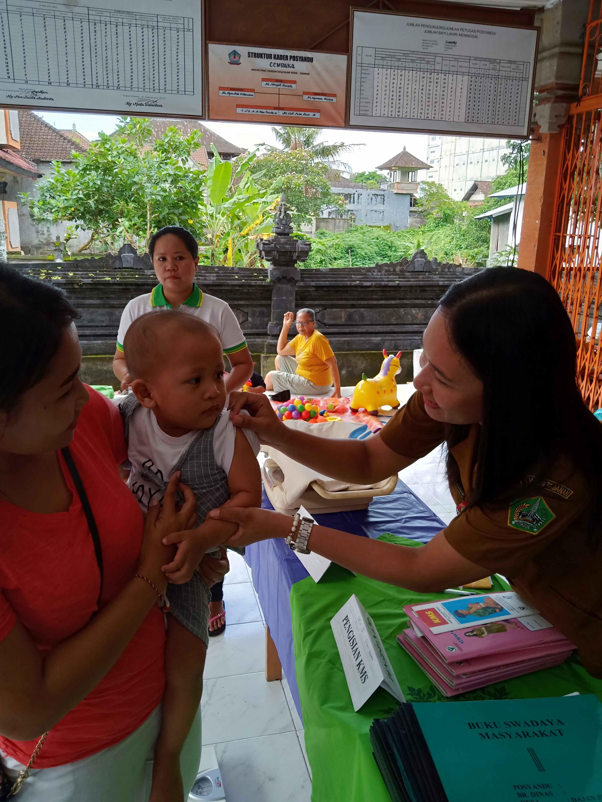
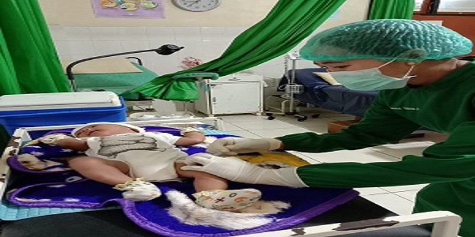

Puji syukur rahmat dan karunia Tuhan Yang Maha Esa sehingga saya mampu menuliskan kata sambutan Kepala Puskesmas dalam rangka penerbitan website UPTD Puskesmas Tabanan III sebagai sarana informasi dan komunikasi update UPTD Puskesmas Tabanan III secara Online. Untuk itu kami mengucapkan banyak terima kasih kepada semua pihak yang mendukung terbitnya website ini, terutama kepada Dinas Kesehatan Kabupaten Tabanan, dan semua anggota keluarga besar UPTD Puskesmas Tabanan III yang selalu berusaha meningkatkan layanan ini.
Di era global dan pesatnya Teknologi Informasi ini, tidak dipungkiri bahwa keberadaan sebuah website untuk suatu instansi seperti halnya UPTD Puskesmas Tabanan III Sangat penting. Website tersebut dapat digunakan sebagai sarana informasi dan komunikasi pihak UPTD Puskesmas Tabanan III dengan masyarakat, dan stakeholder secara luas. Selanjutnya, website UPTD Puskesmas Tabanan III dapat berfungsi sebagai media untuk mengetahui apa saja layanan yang ada di UPTD Puskesmas Tabanan III. Selain itu juga website juga dapat menjadi sarana promosi Puskesmas yang cukup efektif. Berdasarkan hal tersebut saya harapkan nantinya berbagai kegiatan positif UPTD Puskesmas Tabanan III (dalam dan luar gedung) dapat diunggah dari website ini, sehingga masyarakat dapat mengetahui kegiatan, peningkatan mutu layanan dan prestasi yang telah berhasil diraih oleh UPTD Puskesmas Tabanan III .
Akhirnya kami mengharapkan masukan positif dari berbagai pihak untuk website ini agar kami terus belajar dan meng-update diri, sehingga tampilan, isi dan mutu website akan terus berkembang dan lebih baik nantinya.Semoga website ini dapat memberikan manfaat bagi masyarakat dan mampu meningkatkan pelayanan kesehatan melalui pemanfaatan teknologi dan informasi. Terima kasih atas kerjasamanya,salam sehat untuk kita semua..
.jpg)
 






